Galería de Fotos
Un poquito de Mí en Imágenes
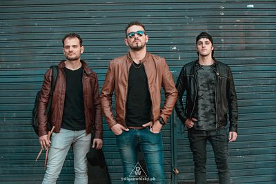
Junto a Patricio Sozzi Quadrini, baterista y Lucas Migoya, bajista, haciendo fotos para el lanzamiento de mi albúm Solista CDG Project.
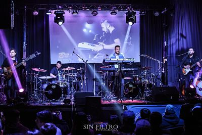
Gospel Drums Festival! Invitado para ser parte de la grabación del DVD en vivo.
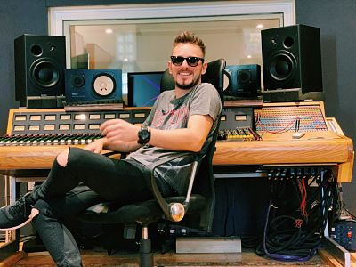
Grabando el videoclip del primer corte de CDG Project.
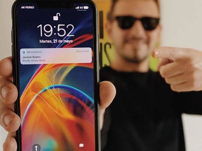
El día de Jordan Ruddes me mando un mensaje.
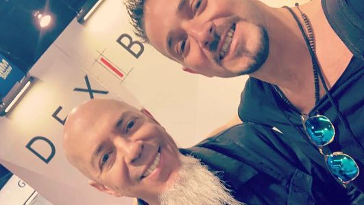
El día que conocí a Jordan Ruddes en Namm.
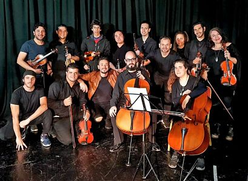
Junto a la orquesta sinfónica que nos acompaño en la grabación del segundo video clip de CDG Project.
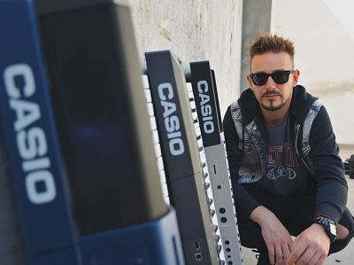
Producción de fotos para Casio.
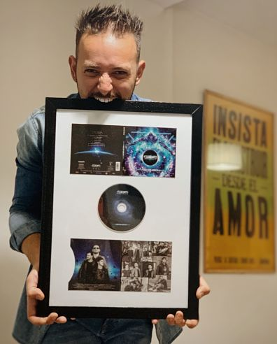
Tapa de mi albúm solista, después de meses y meses de esfuerzo.
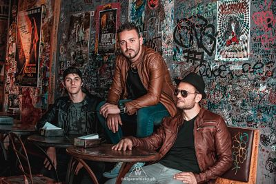
Sesion de fotos previo al lanzamiento de CDG Project.
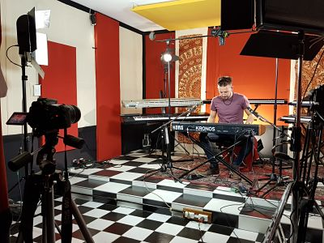
Grabación del The Secret Key 4.

Tapa de mi albúm solista, después de meses y meses de esfuerzo!
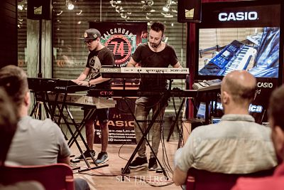
Masterclas en Tacahuano.